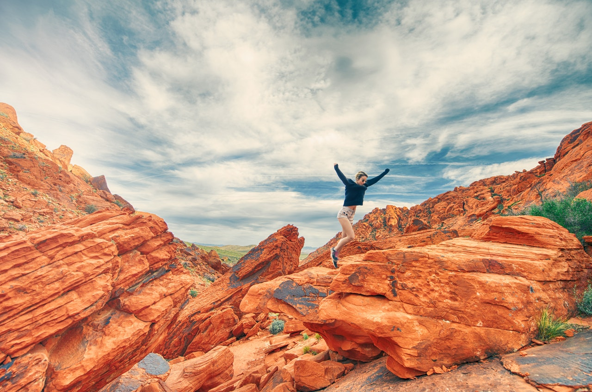
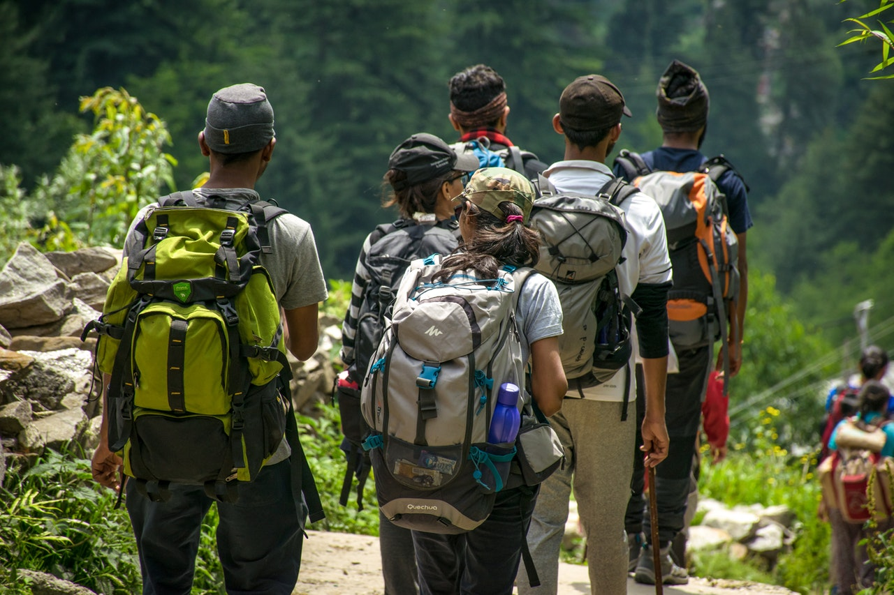

TRENDING TRIPS:
ALL
PROFESSIONAL
PERSONAL
May 1, 2018
Amazing Trip!
We were not sure we could make it up this last hill, but we pushed ourselves and everyone made it. We all found eachother through guidr and could not have had this wonderful experience without it.
Dec 22, 2018
Amazing Trip!
We journeyed out into the swamps in Florida and had such a great time. We saw tons of wildlife and had to camp on platforms over the marsh. We had a few scary incidents with alligators but it was an unforgettable journey.
Mar 7, 2018
My first alpine adventure!
This was an amazing experience. We journeyed in the snow for days before we found an amazing frozen waterfall to climb. We camped at the base for two days planning. On the third day everyone in the group was able to climb the icy wall!
Apr 12, 2018
My Journey in the Clouds.
It began as all epic adventures begin. With a phone call on a rainy morning. Begrudging I geared up and prepared for an assent of a 10km peak. We snapped this shot just above the clouds.
Jun 28, 2016
Joshua Tree!
This is one of the most amazing places I have visited. The rock formations are incredible and provide tons of fun just exploring the cracks and caves they form! We even saw rock climbers scaling some of the higher peaks!
Jan 22, 2019

Arches!
Arches National Park lives up to its reputation. It is one of the most pristine places I have ever visited. The stars at night are incredible and it was almost void of other people.
Apr 13, 2015

Group Trip!
This was a great trip for the group I took into the woods. Many of them had never been on an overnight backpacking trip. They bonded over their bruises and sore backs, but when we reached the first big summit their faces in awe showed it was all worth it.
Nov 24, 2016
Three is a crowd!
Just a friend and I decided to take a long weekend and hike part of the Appalachian train through Blood Mountain. It was a trip of unforgettable memories.
Feb 22, 2018

A weekend In Linville Gorge!
We set up early for the Linville Gorge wilderness. This is a remote region with very little access in or out. I was excited to see one of the deepest and oldest gorges in the Country!
Why use guidr?
- With guidr you can share your love of the outdoors with others in a community of enthusiasts and professionally. We offer services to allow you to share your experiences with a like minded audience that can interact with, and enjoy your adventure.
- Gone are the days of reading through several different resources trying to plan a trip. Here a Guidr we allow you to look at the trip reports from other guides, to help inspire and inform your next trip.
- Are you just returning from a trip and want to share the excitement and adventure you just had? Well you can log into Guidr and upload photos, and a log of your trip. From here others can view and interact with your report. Become a well known guide and make our front page!
- Here at Guidr we want to help you savor your past trips. Have a way to look back at your memories and experiences, and share that experience with a community of other enthusiast who are sure look forward to hearing about your next adventure.
Core Feature?
- Create a log of you trip. This allows you to upload photos and descriptions of your trip. You can then go back and see a record of all of the trips you have logged on your profile.
- Browse other people's trips. You can look through other peoples uploaded photos and trip descriptions to gain inspiration or get more information for your next trip to the same area.
- Interaction with a community of enthusiasts. Unlike other social media apps that are meant for a very wide audience, you can know at guidr your content will be received by professionals and enthusiasts.
- Excitement! After reading about a few trips you are sure to be ready to get back out there and explore the great outdoors. Whether you are on a solo adventure or guiding a group into the wilderness we would love to hear about it.